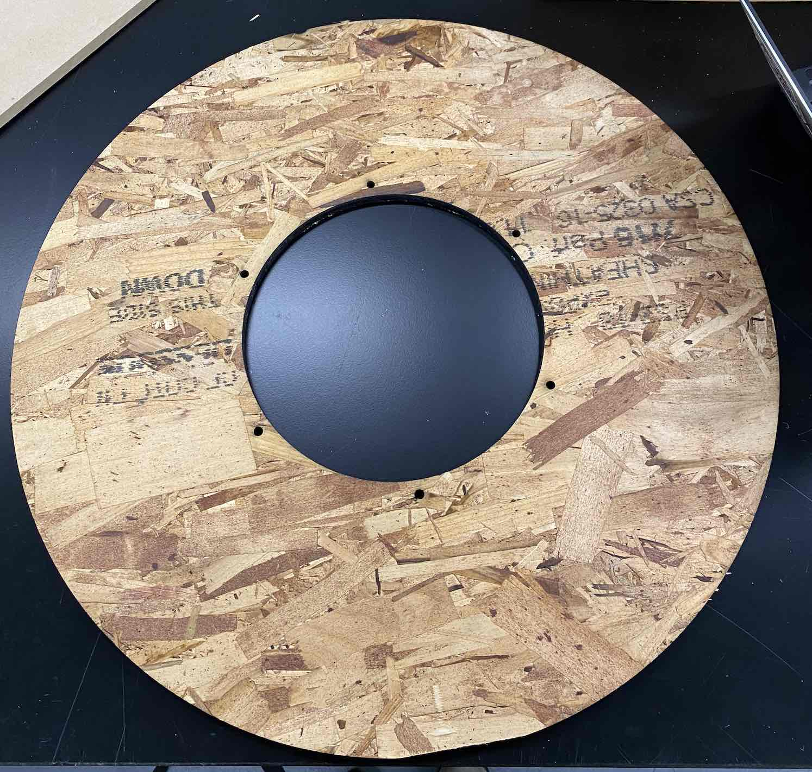
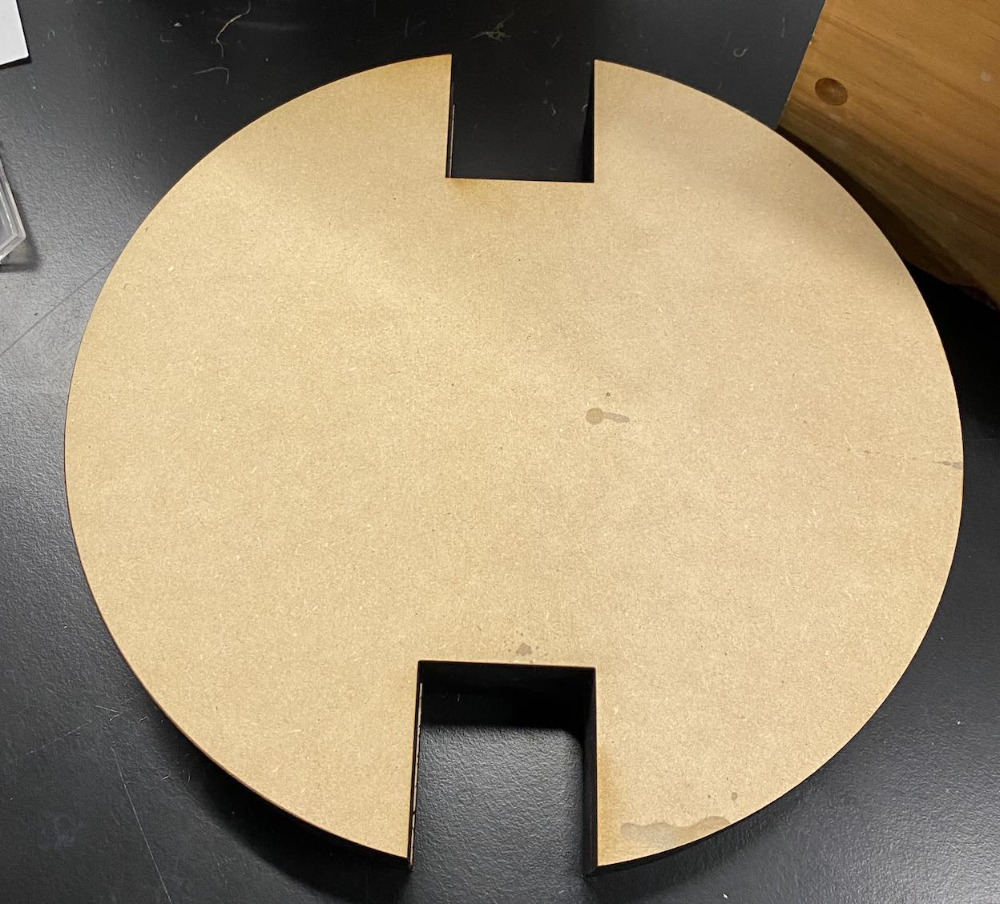
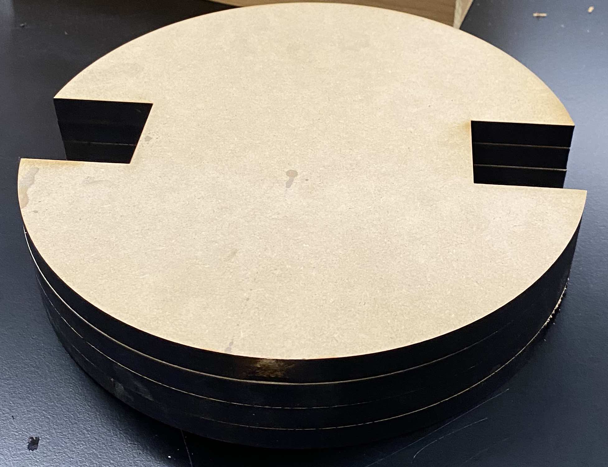
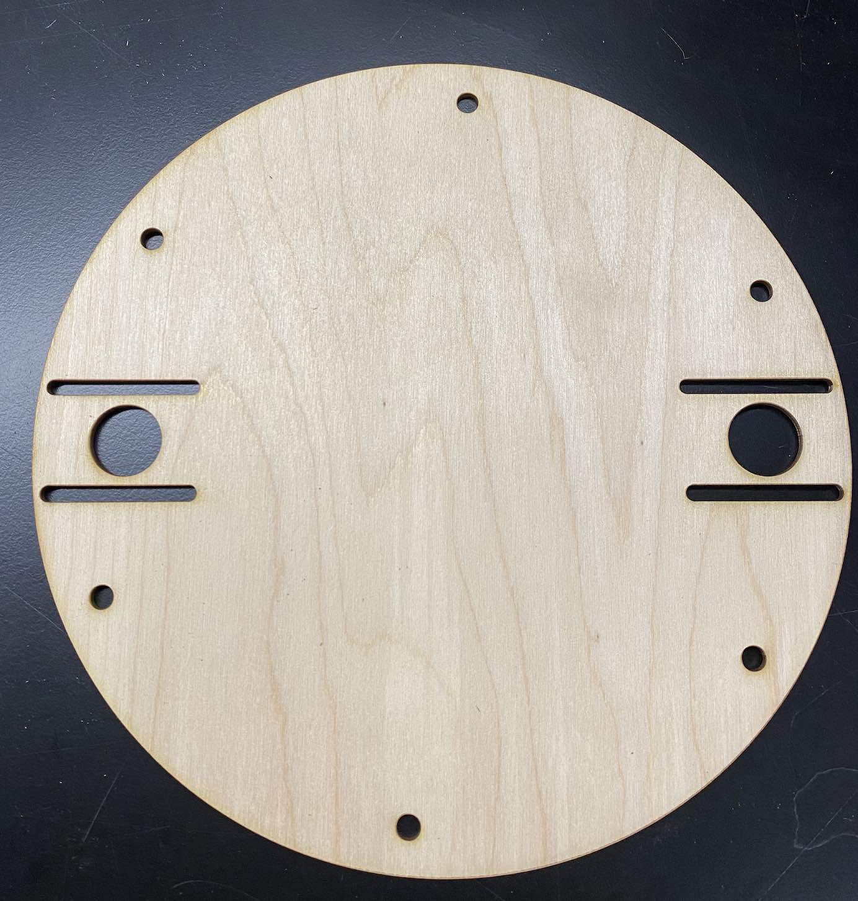
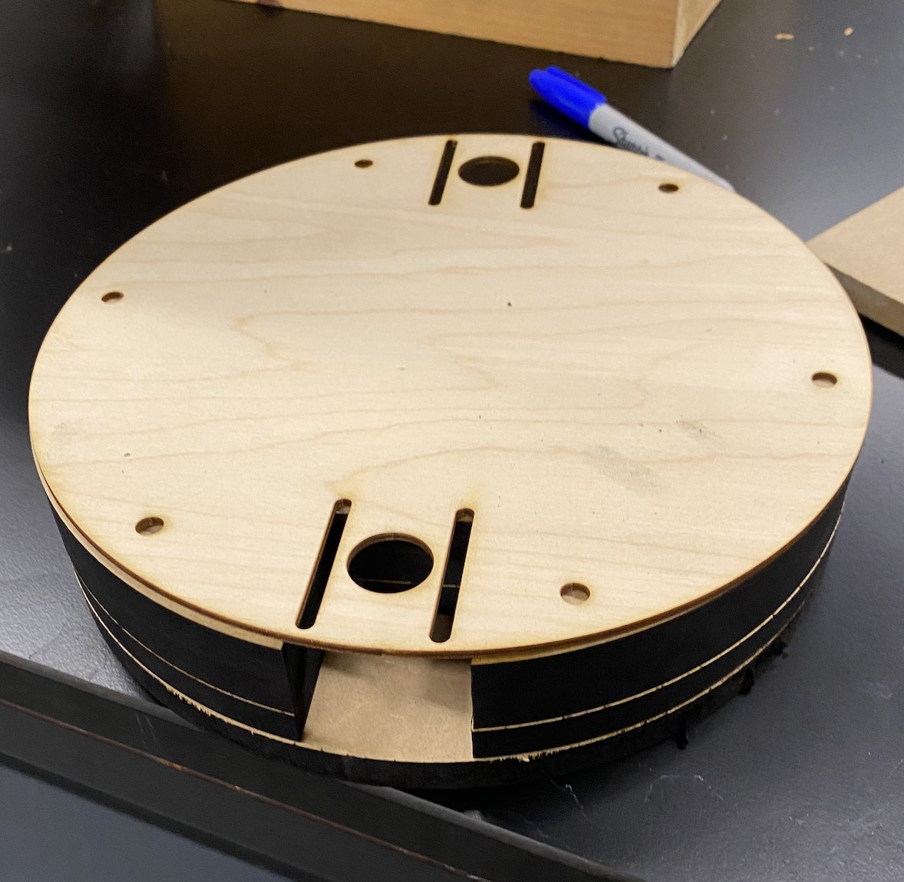
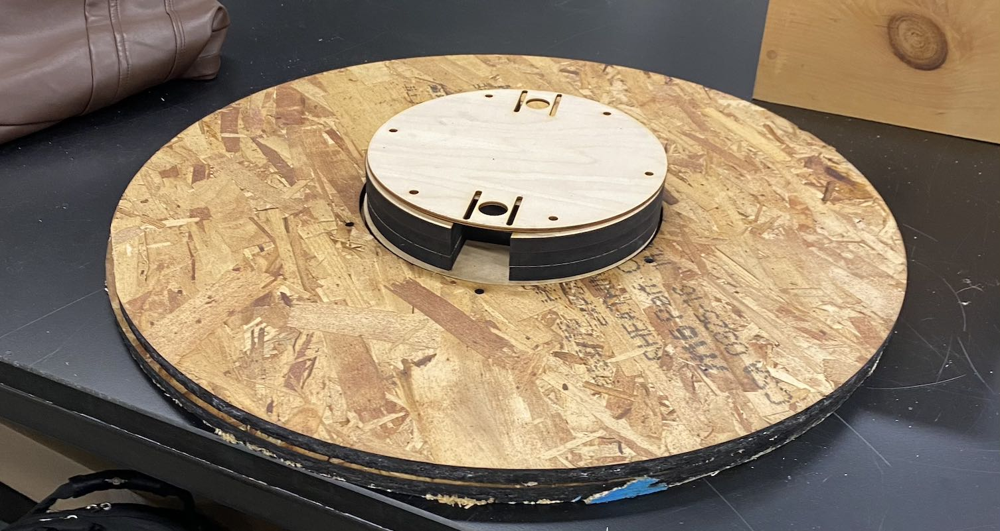

<topbar style="display:none;">
<item><a href="../index.html">Home</a></item>
<item><a href="../about.html">About</a></item>
</topbar>
## Update 10 - Manufacturing and Realization of 3D Model

We began laser cutting the components necessary to build the rotating base. First was the outer ring made out of plywood that would serve as the primary staging area for the reflector and salt box. The primary difficulty was the flammability and non-uniformity of the plywood. Because of this, we used a low power and relatively fast speed. The first attempt was semi-successful. The outside was cut but the inner circle and smaller holes used for mounting were only partially cut through. The second attempt, we used a faster speed and more passes. This successfully cut all the holes necessary.



Then, we began cutting the central column where the stepper motor driving the rotation will reside. the column had to be taller than the thickness of any of the available material so we decided to stack four layers of wood on top of eachother. This material was much easier to cut so it didn't take nearly as much time.





While the plywood ring and central disks were being cut, we designed a final thin, wood piece to secure the stepper motor within the column. This piece contains a large hole for the gear on the stepper motor to fit through and parallel tracks so the position of the stepper motor can be adjusted.



Below are pictures of all the pieces in their relative positions, except the plywood ring will be elevated by roller bearings to reduce friction.



